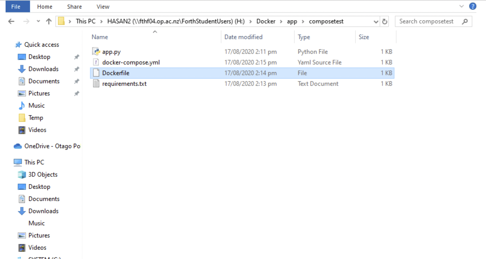
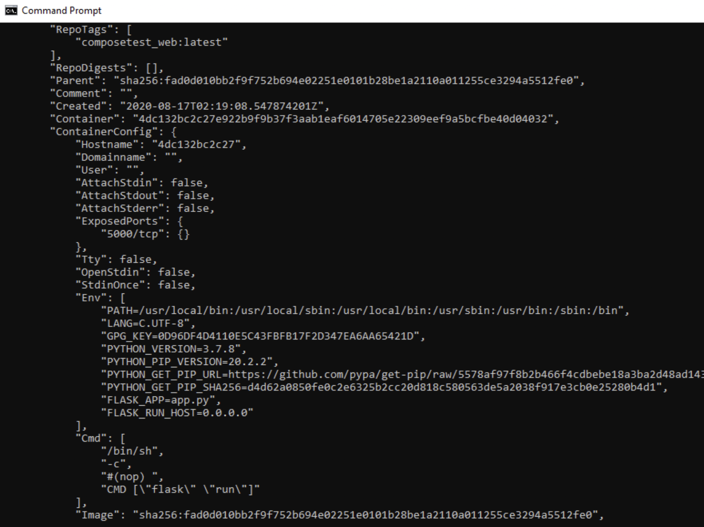
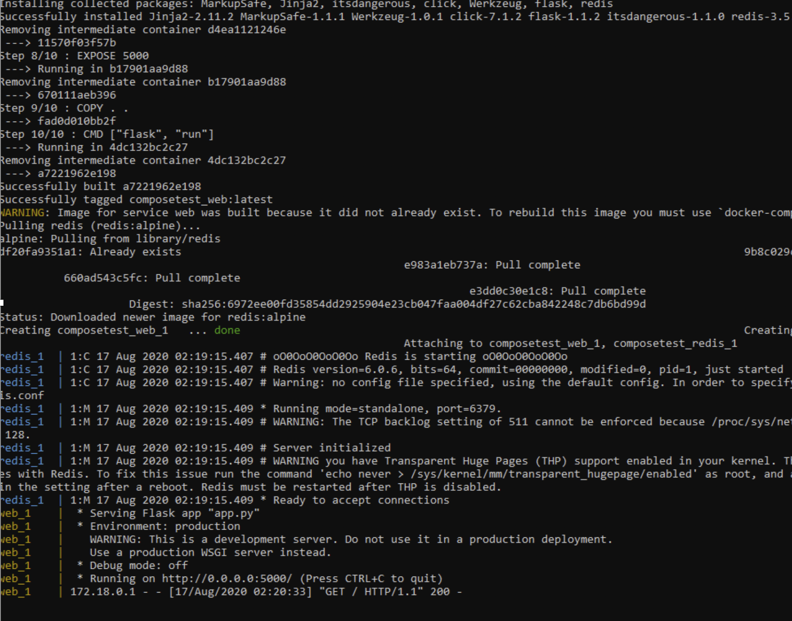
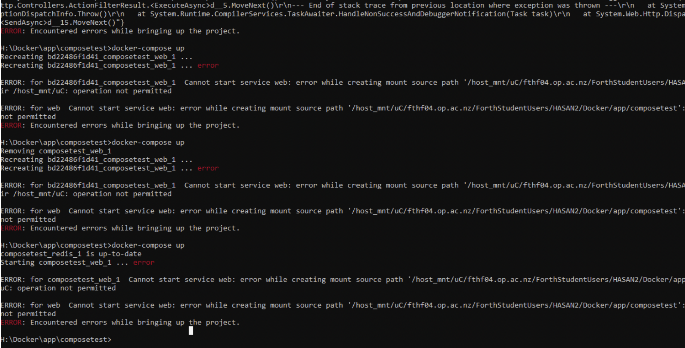

  



In week five I had some resarch about Docker Compose and I underestand Compose is a tool to running multi-container Docker application.
I used the Install Docker Compose Documentation website to guide me to install the docker compose. However I underestood on Desktop system like Docker, for Mac and Windows, Docker compose is included as part of those desktop installs.
I used the << docker-compose --version >> command to check the version of docker-compose.The version was 1.26.2, Then I started with Docker Compose.
In the first step I create the directory for the project which I named composetest, and then I created some files, In file app.py I putting "redis" as a host name of the "redias" container and used the 6379 default port for "Redis". After that I created the requirements.txt and Dockerfile in my project, Dockerfile builds a docker image. In next step I created another file named docker-compose.yml, this compose file defines two services which are "web" and "redis".
After that I created all required files. I tried to Run my app with compose, I ran the following command << docker-compose up >> to pull a Redis image, , builds an image for my code and starts the service which I defined.
I entered the http://localhost:5000/ in my browser To view the application running in the browser and my application
successfully run, also I tried to entered the http://127.0.0.1:5000 and I saw the following message "Hello World! I have been seen 1 times.", then after that I refreshed my page and the number increased.
I used another terminal to check my local images, it contained web and redis.
Also I tried to inspect images with the following command << docker inspect
In next step I tried to edit the compose file to add bind mount for the web service. unfortunately after editting the file I got an error and I tried to solve my Issue by some reaserching and removing all the files and created new files, but the same issue appeared again and I decided to get help from grayson to solve my problem.
In my next class of this week I tried one more time to solve the issue but I couldn't solve it, therefore I asked Grayson to help me. He checked my project and files and tried to fix it, he said you don't need to Edit the Composefile to add a bind mounthe for now and also after any changes I have to run << docker-composeup --table >> to see the changes on my application. I removed my images one more time and then ran it again and this time after writing any message in app.py I ran the docker-composeup --table and my message in my web pages changed successfully.
For my next project me and Sabi had a chat with Grayson and he asked us to choose a networking topic. I did some research about it to find a good topic for it.
This week I started with pushing my composetest container, compostest.web and redis application to dockerHub. First I tried to push both of them at the same time, but it didn't worked, then I tried to push one by one. Therefore, I was able to push the both of them to dokerhub successfully. Also I had did more resarch about networking to choose my networking project's topic.
We had one standup meeting and we talked about what we did and what we plan to do for the next project within the group. For the next project, which is a Networking project, me and Sabi will work together to design a network. After doing a lot of research to get an idea about designing network, we finally decided to setup a network topology for a small business. We had a discussion about choosing a device and how we can set up the network for an office in way that it is both cost efficient and secure, also we had a chat with Rob about our network topology and we made some changes, in order to have a basic plan for our project.
In conclusion I've worked with docker and docker-compose. At the start point of working with docker desktop and docker-compose I had many problems with it, however now I have some knowledge about it. I learnt about container, images, docker-hub, docker-compose and also some commands related to docker. I was able to understand how to push multiple container to dockerhub successfuly.